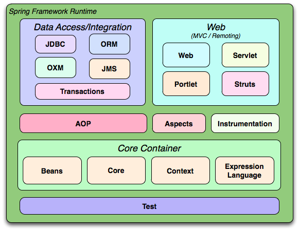

学习了新知识后除了代码上的敲敲打打，少不了的就是对自己知识的一个总结，总结的同时还能查漏补缺，何乐而不为，多的就不记录了，直接进入正题。
介绍
Spring是一个开源、轻量级的 一站式框架。
- 轻量级：如果一个框架没有侵入性，就可说该框架是轻量级。
- 侵入式：使用一个框架，必须实现框架提供的接口，或者继承框架提供的类。
优点
- 方便解耦，简化开发
- 面向切面编程AOP
- 提供众多服务，事务管理
- 对众多主流框架集成，如Hibernate,Struts2,JPA等…
体系结构

上图所示，核心内容分四个点：
- Beans
- Core
- Context
- Expression Language（SpEL）
其实在这里有一个疑惑，这个核心里内容Beans和Context怎么理解呢？
Beans
Bean：由IoC容器管理的那些组成你应用程序的对象我们就叫它Bean。Bean就是由Spring容器初始化、装配及管理的对象，除此之外，bean就与应用程序中的其他对象没有什么区别了。
（简而言之：Bean就是一个普通对象，只不过在IoC容器里的对象我们就成叫它为Bean）。
Beans主要解决了三件事：Bean 的定义、Bean 的创建以及对 Bean 的解析。而对使用者来说唯一需要关心的就是 Bean 的创建，其他两个由 Spring 在内部帮你完成了，对你来说是透明的。
Core
Core 就是发现、建立和维护每个 Bean 之间的关系所需要的一些列的工具，从这个角度看来，Core 这个组件叫 Utils 更能让你理解。
Context
发现每个 Bean 之间的关系，为它们建立这种关系并且要维护好这种关系。所以 Context 就是一个 Bean 关系的集合，这个关系集合又叫 IoC 容器，一旦建立起这个 IoC 容器后 Spring 就可以为你工作了。
Context 作为 Spring 的 IoC 容器，基本上整合了 Spring 的大部分功能，或者说是大部分功能的基础。
正题
关于Spring的两点：IoC（控制反转）/DI（依赖注入）、AOP（面向切面编程），那么我们就需要来讲什么是IoC，什么是AOP。
IoC（控制反转）：控制反转是什么？控制了什么？怎么又反转了？
我们从JavaSE学习过来，知道使用对象之前必须先通过 new 来进行创建的，是程序主动创建 依赖对象 ，而有了IoC后，我们将 设计好的对象交给容器控制，而非手动的在对象内部直接控制（如对象的创建）。那么 谁控制谁？当然是IoC容器控制了对象；控制了什么？主要控制了外部资源获取（不只是对象包括比如文件等）。
PS：依赖对象其实就是一个普通对象，只是被调用者所依赖，称为依赖对象。
为何是反转，哪些方面反转了：传统方法是我们自己在对象中主动控制获取依赖对象，而反转过后是由容器来帮忙创建及注入依赖对象；这里可能就有疑问，为何是反转呢？ 因为由容器帮我们查找及注入依赖对象，对象只是被动的接受依赖对象，所以是反转；哪些方面反转了？依赖对象的获取被反转了。
PS：写了上面一段感觉，怎么说呢，不好理解。那么举个栗子来讲一下： 假如说人会开车 ，传统方式
1 | public class Person{ |
开车方法 里面 new 一个车，开车一结束（方法执行完毕）Car实例自然就销毁了。人执行开车方法时候，那么人依赖车（没车咋开车，new一个）。这里车就是 依赖对象 ，而且你会发现每次开车都需要 new 一个车，过于浪费。那么改进一下
1 | public class Person{ |
我们不必在开车方法里面每次 new 一个车，而是通过传参的形式，那么只需要传入一辆车来开。
这两种方式有什么不同呢？第一种方式就是每次开车就需要new，而第二种new一次一直用，减少了人对车的依赖。这时候新问题来了不管第一种还是第二种我们都需要手动 new 一个车。
(疑惑：为什么传参就减少人对车的依赖？传参的时候我可以传大车，小车，卡车。可以做一个Car 的接口。而第一种直接在方法里new就限制了Car的类型。)
这时候Spring出场！我们就有一了一个 IoC容器 ，而不在需要自己手动的new了！只需要通过一系列的 配置 ，可以使其 IoC容器 管理这些对象（如：Car），在我们需要的时候自动注入进来（注意是自动！而非我手动形式）。这样 IoC容器 就完成了对 对象的控制，以及反转 ，也就诠释了 对象（人）只是被动的接受依赖对象（车） 。
讲了这么多，那IoC能做什么？
IoC不是一种技术，只是一种思想，一个重要的面向对象编程的法则，它能指导我们如何设计出 松耦合、更优良的程序。传统应用程序都是由我们在类内部主动创建依赖对象，从而导致类与类之间高耦合，难于测试；有了IoC容器后，把创建和查找依赖对象的控制权交给了容器，由容器进行注入组合对象，所以对象与对象之间是松散耦合，这样也方便测试，利于功能复用，更重要的是使得程序的整个体系结构变得非常灵活。
其实IoC对编程带来的最大改变不是从代码上，而是从思想上，发生了 “主从换位” 的变化。应用程序原本是老大，要获取什么资源都是主动出击，但是在IoC/DI思想中，应用程序就变成被动的了，被动的等待IoC容器来创建并注入它所需要的资源了。
IoC很好的体现了面向对象设计法则之一—— 好莱坞法则：“别找我们，我们找你”；即由IoC容器帮对象找相应的依赖对象并注入，而不是由对象主动去找。
IoC和DI
DI—Dependency Injection，即“依赖注入”：是组件之间依赖关系由容器在运行期决定，形象的说，即由容器动态的将某个依赖关系注入到组件之中。依赖注入的目的并非为软件系统带来更多功能，而是为了提升组件重用的频率，并为系统搭建一个灵活、可扩展的平台。通过依赖注入机制，我们只需要通过简单的配置，而无需任何代码就可指定目标需要的资源，完成自身的业务逻辑，而不需要关心具体的资源来自何处，由谁实现。
理解DI的关键是：“谁依赖谁，为什么需要依赖，谁注入谁，注入了什么”，那我们来深入分析一下：
- 谁依赖于谁：当然是应用程序依赖于IoC容器；
- 为什么需要依赖：应用程序需要IoC容器来提供对象需要的外部资源；
- 谁注入谁：很明显是IoC容器注入应用程序某个对象，应用程序依赖的对象；
- 注入了什么：就是注入某个对象所需要的外部资源（包括对象、资源、常量数据）。
IoC和DI有什么关系呢？其实它们是同一个概念的不同角度描述，由于控制反转概念比较含糊（可能只是理解为容器控制对象这一个层面，很难让人想到谁来维护对象关系），所以2004年大师级人物Martin Fowler又给出了一个新的名字：“依赖注入”，相对IoC 而言，“依赖注入”明确描述了“被注入对象依赖IoC容器配置依赖对象”。
最后结尾：
控制正转：我们直接在对象内部通过new进行创建对象，程序主动去创建依赖对象。
控制反转：由容器帮我们查找及注入依赖对象，对象只是被动的接受依赖对象。
上面四个问题一定要反复问自己，并且能想通，回答出来。
最后的最后感谢你的阅读，如果本文有误或者有什么不理解地方欢迎留言讨论。